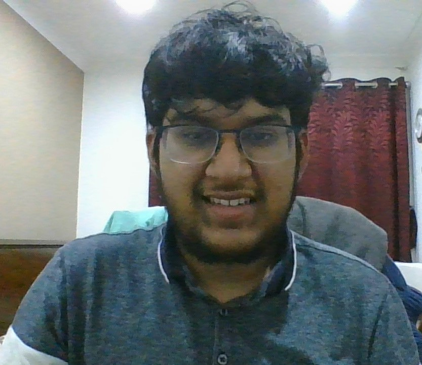

 <title>My Profile</title>
 <header>
   <hgroup>
   <h1>Shreyas Sahu</h1>
    <h2>Student</h2>
   </hgroup>
  
  <nav role="navigation"> 
    <ul>
      <li><a href="PersonalBG.html">About Myself</a></li>
      <li><a href="my_CV.html">My CV</a></li>
      <li><a href="myhobby.html">My hobby</a></li>      
    </ul>      
   </nav>  
   </header>
   
   
   
  <section> 
   <article>
     <h3>About Myself</h3>
     Hi My name is Shreyas Sahu. I was born in east London. I am 19 years old. I went to a secondary school called Chadwell Heath Academy
     for 7 years. Now, I am a student at Queen Mary doing BSc Computer Science. In addition to this, I am part of an EECS school in QMUL,
     where EECS stands for electronic engineering and computer science. Before enrolling to Queen Mary, I was fascinated about Maths and 
     science and I had no knowledge about programming. However, when I started the first semester, I was captivated of learning how to 
     program and how that programming skills are applied in real-life. 
 <figure>
   
  <figcaption>
   Shreyas Sahu
  </figcaption>   
     </figure>
   
   </article> 
   </section>
   
 
   
   
   <footer>
    <hr>
     <a href="my_homepage.html">Home</a>
     <hr>
   </footer>